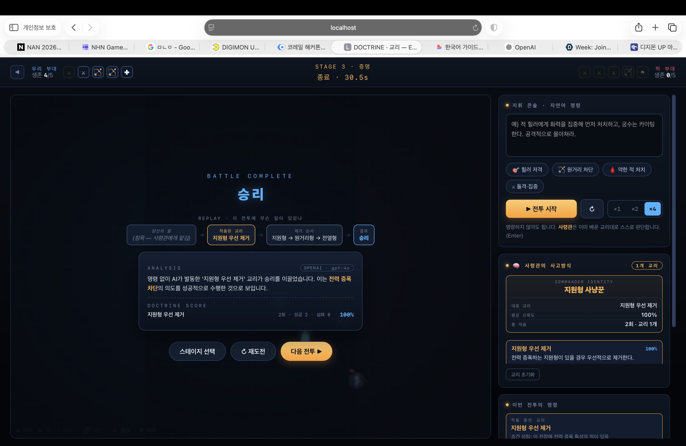

이 게임에서 LLM은 NPC 대화나 텍스트 생성 같은 장식이 아니다. LLM은 게임의 핵심 메커니즘 그 자체다. 두 가지 일을 한다.
사람은 사전에 있는 말로 말하지 않는다. 아래는 실제 측정값이다 (Rule-based = scripts/proof.js, LLM = gpt-4o 실호출 응답).
| 플레이어 입력 | Rule-based | LLM | LLM이 읽은 의도 |
|---|---|---|---|
| “적 힐러에게 화력을 집중해 먼저 처치해라” | ✅ | ✅ | 회복 차단 |
| “쟤 하나 때문에 안 죽잖아” | ❌ | ✅ support | 회복 차단 |
| “뒤에 깃발 든 애 거슬려” | ❌ | ✅ support | 지원 제거 |
| “뒤부터 죽여” | ❌ | ✅ ranged | 후방 위협 제거 |
| “안녕하세요” | ❌ | ❌ | 이해하지 못함 |
이 표가 동시에 증명하는 세 가지:
| 엔드포인트 / 파일 | 역할 |
|---|---|
| /api/intent | 전투 전. 자연어 → 이번 전투의 정책(targetRole, focusFire, aggression …). |
| /api/doctrine | 전투 후. 전투 결과 → 영구 교리(condition + action) 또는 예외. |
| server/proxy.js | LLM 프록시. OpenAI · Anthropic 어댑터가 동일 계약. 키는 서버에만. |
| js/doctrine.js | 클라이언트 심장. LLM 실패 시 규칙 기반으로 자동 강등(동일 계약). |
교리는 “패턴”이 아니라 “원리”다 — 전장에 대해 평가되는 조건부 술어다.
// 교리 = 조건(condition) + 행동(action) { "name": "증폭형 우선 제거", "condition": { "requiresTrait": "amplifier" }, // 증폭형이 없는 전장에선 발동조차 안 함 "action": { "targetRole": "support", "exceptTrait": "volatile" } // 지원형 우선, 단 자폭은 제외 }
프롬프트의 핵심은 “표면의 단어가 아니라 의도를 읽어라”이고, 출력은 json_schema로 게임이 아는 값에 강제 제약된다.
# /api/intent 시스템 프롬프트 (server/proxy.js)
당신은 전술 게임의 "AI 사령관"이다. 플레이어가 자연어로 내린 명령을 정책으로 번역한다.
★ 핵심: 플레이어는 게임 용어로 말하지 않는다. 일상어·비유·불평으로 말한다.
"쟤 하나 때문에 안 죽잖아" → 회복시켜주는 적이 있다 → targetRole="support"
"뒤부터 죽여" → 후방의 원거리·지원 유닛부터 → targetRole="ranged"
표면의 단어가 아니라 **의도**를 읽어라.
- targetRole은 주어진 role 목록 중 하나이거나 null. 지어내지 마라.
- 전혀 전술 명령이 아니면(예: "안녕") understood=false.
# /api/doctrine 시스템 프롬프트 (server/proxy.js)
★ 가장 중요한 원칙: 교리는 "패턴"이 아니라 "원리"여야 한다.
❌ "힐러를 먼저 공격한다" (유닛 이름 암기)
⭕ "적 전력을 증폭하는 지원형이 있으면 먼저 제거한다" (전장에 대한 술어)
- 반드시 역할군(role) 수준으로 일반화하라. (힐러도 버퍼도 support)
- 예외 학습: 교리를 적용했는데 특정 특성 때문에 졌다면, 교리를 버리지 말고
exceptTrait에 그 특성을 넣어라. (자폭 → role="support", exceptTrait="volatile")
- 없는 의도를 지어내지 마라. 명령이 없었으면 role=null.
동일 프록시(OPENAI · gpt-4o)에 실제로 보낸 요청의 응답이다.
입력: "뒤에 깃발 든 애 거슬려" → { understood: true, targetRole: "support", focusFire: false, why: "지원 제거", rules: ["적 지원형을 최우선 제거"] } 입력: "쟤 하나 때문에 안 죽잖아" → { understood: true, targetRole: "support", focusFire: true, why: "회복 차단", rules: ["적 지원형을 최우선 제거", "화력 집중"] } 입력: "뒤부터 죽여" → { understood: true, targetRole: "ranged", focusFire: true, why: "후방 위협 제거", rules: ["후방 위협 제거", "화력 집중"] } 입력: "안녕하세요" → { understood: false, targetRole: null } // 지어내지 않는다

키 없이도 심사·평가가 가능하도록 규칙 기반 폴백을 포함한다. 그러나 규칙 기반은 정규식으로 사전 정의된 교리를 고르는 것이므로, 절대 LLM인 척하지 않는다. Battle Complete 화면의 ANALYSIS 헤더에 추론 백엔드를 항상 표시한다.
ANALYSIS [ OPENAI · gpt-4o ] 실제 LLM 추론
ANALYSIS [ LOCAL · 규칙 기반 ] 키 없는 평가 환경
두 경로는 완전히 같은 계약(ctx → {analysis, doctrine})을 지키므로, 프런트 코드는 한 줄도 바뀌지 않는다. 그리고 폴백의 한계(구어체를 이해하지 못함)는 회귀 테스트로 고정되어 있다 — 누군가 정규식에 데모 문장을 넣으면 테스트가 깨진다.
제품의 AI(GPT-4o)와 별개로, 이 프로토타입은 Claude(Claude Code)와의 협업으로 개발되었다.
| AI 도구 | 활용 내역 |
|---|---|
| Claude Code (개발 파트너) |
설계 토론 · 구현 · 리팩터링 · 밸런스 튜닝 · 회귀 테스트 작성. 자연어로 요구를 전달하면 코드로 옮기고, 헤드리스 시뮬레이터로 검증하는 루프를 반복했다. |
| OpenAI GPT-4o (제품 런타임) |
게임 내 의도 추론 · 교리 생성. structured outputs(json_schema)로 출력을 게임 규칙에 제약. |
이 프로젝트에서 LLM은 텍스트를 생성하기 위해 사용되지 않았다.
LLM은 플레이어의 전략을 이해하고 일반화하기 위해 사용되었다.
그래서 LLM은 이 게임의 장식이 아니라, 핵심 메커니즘 그 자체다. 규칙 기반 시스템은 “힐러 먼저”는 처리할 수 있어도, “쟤 하나 때문에 안 죽잖아”에서 의도를 읽고 그것을 힐러가 없는 전장에도 적용되는 원리로 일반화할 수 없다. 바로 그 지점이, 이 게임이 LLM이 아니면 존재할 수 없는 이유다.